공과대학 지하주차장
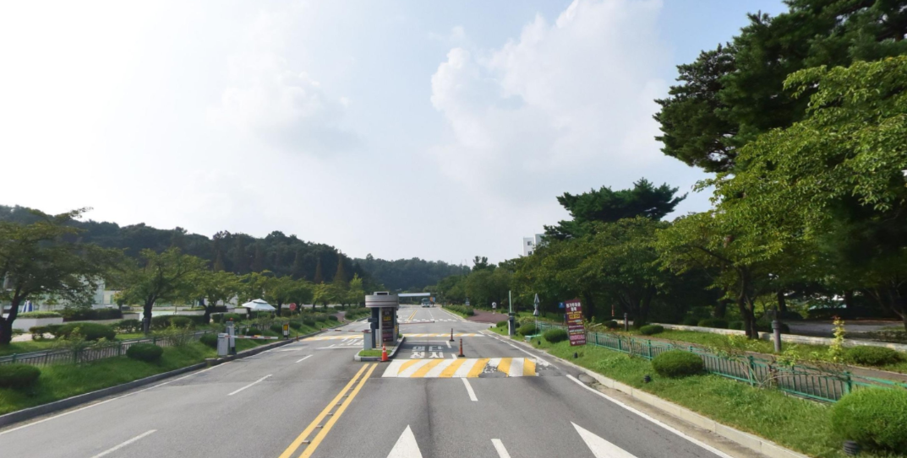
정문 진입 후 차단기를 통과해 직진하고, 왼쪽 농구장을 지나 계속 직진 후 좌회전합니다.
- 내비게이션: 경희대학교 국제캠퍼스 농구장
- 외국어대학 앞 버스 정류장에서 교내 버스 탑승
- 생명과학대 하차
Venue Guide
대회 장소는 경희대학교 국제캠퍼스 선승관입니다. 차량 이용 시 안내된 주차장만 이용해주시고, 주차 후 교내 운행 버스를 타고 생명과학대에서 하차하면 선승관으로 이동할 수 있습니다.
Parking

정문 진입 후 차단기를 통과해 직진하고, 왼쪽 농구장을 지나 계속 직진 후 좌회전합니다.
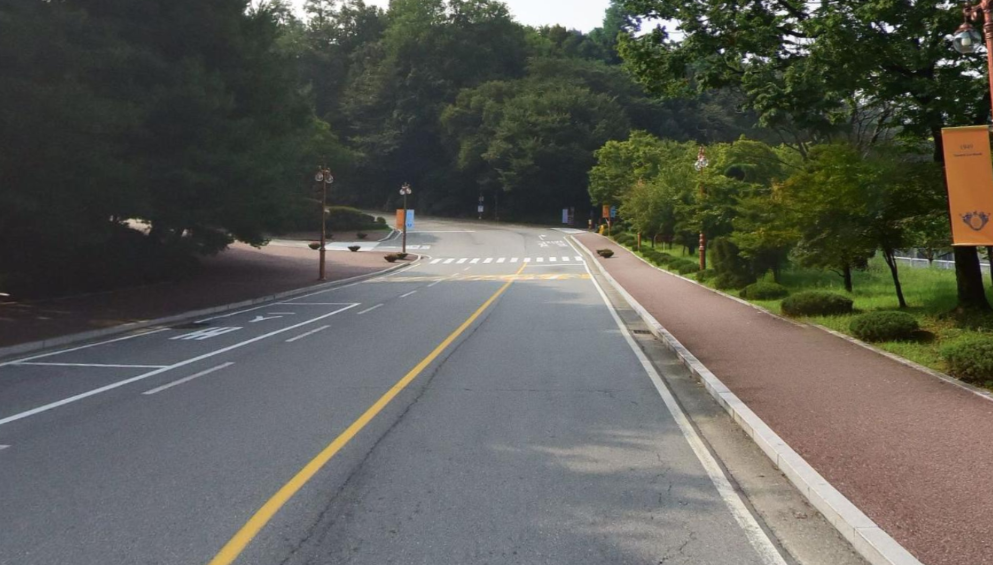
정문을 통과해 보이는 길을 따라 직진한 뒤 차단기를 통과하고, 차선을 따라 직진 후 좌회전합니다.
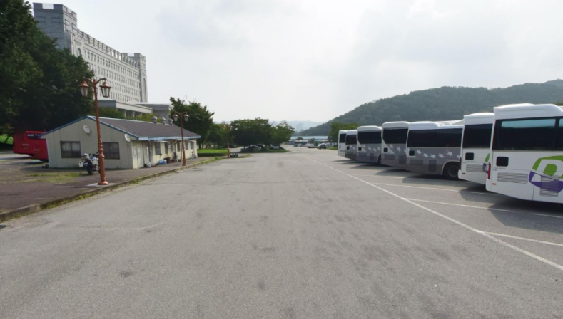
정문과 차단기를 지나 직진하고, 선승관을 지나 안내 동선에 따라 주차장 입구로 진입합니다.
안내된 주차장 외 주차는 금지입니다. 타 단과대 주차나 불법 주차는 민원 및 교통 혼잡으로 경기 운영에 차질을 줄 수 있습니다.
Venue Route
경희대학교 국제캠퍼스 정문을 통과합니다.
보이는 길을 따라 직진합니다.
차선을 따라 계속 직진합니다.
오르막길을 따라 올라갑니다.
차선을 따라 우회전합니다.
선승관 체육관에 도착합니다.
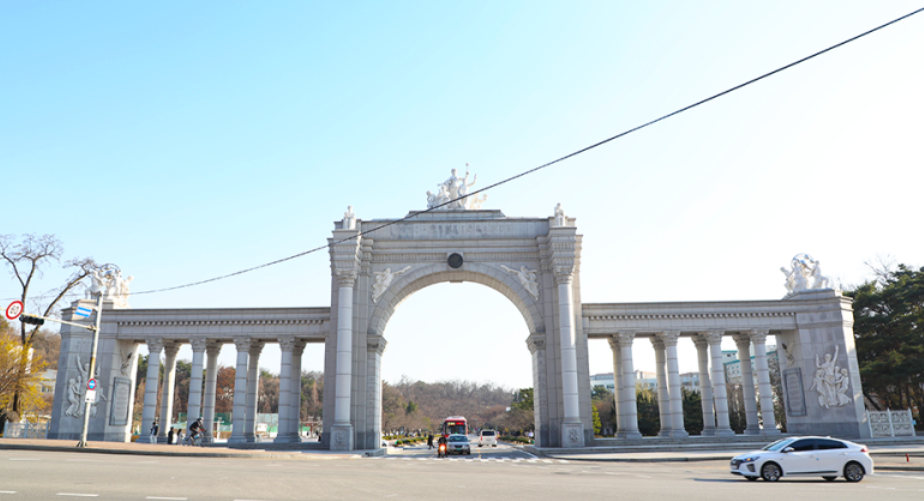
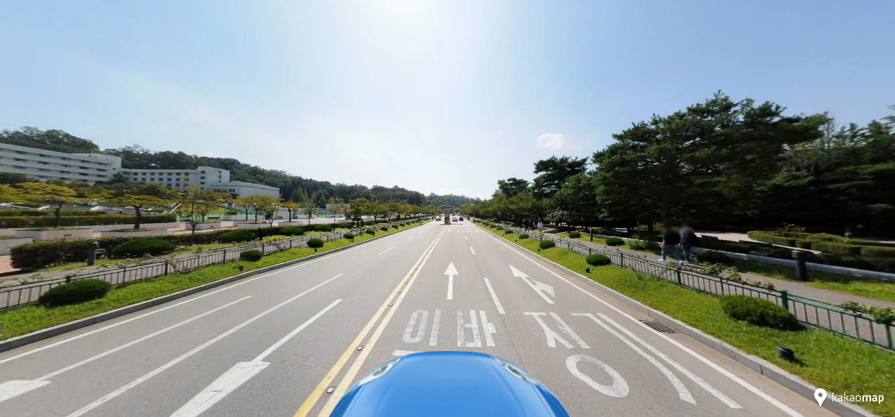
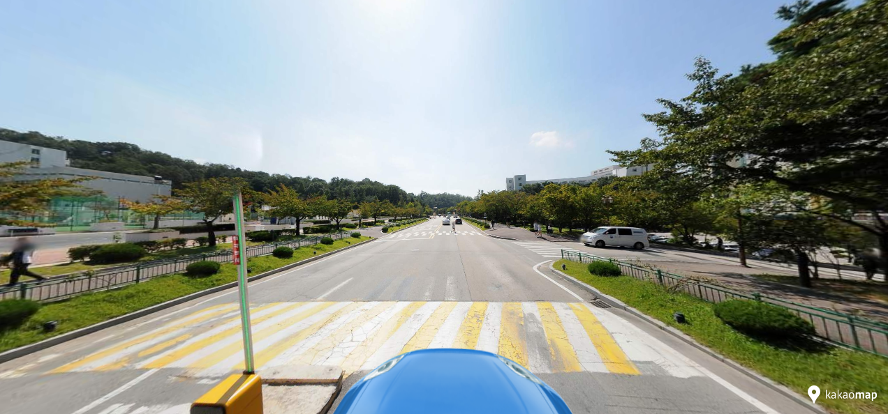
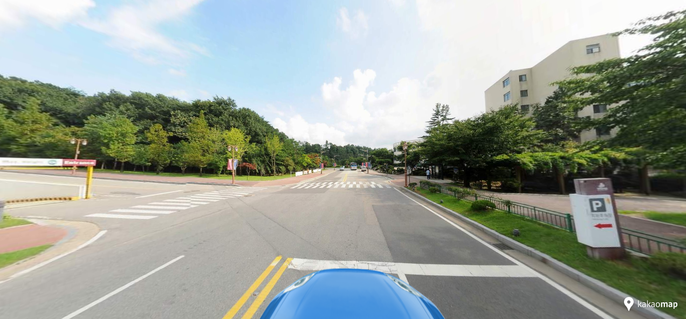
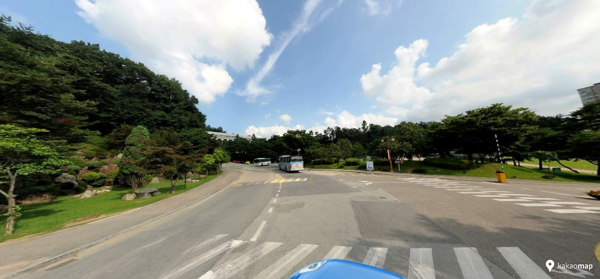
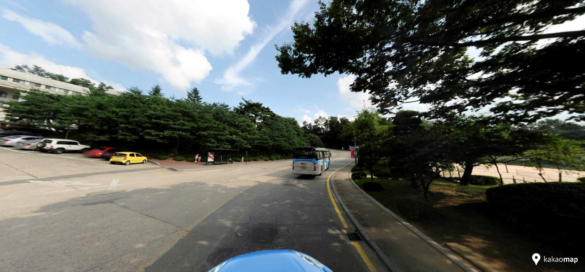
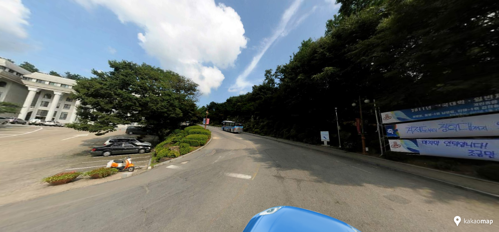
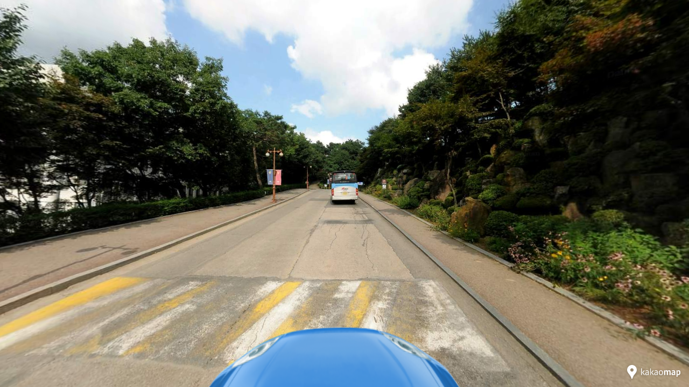
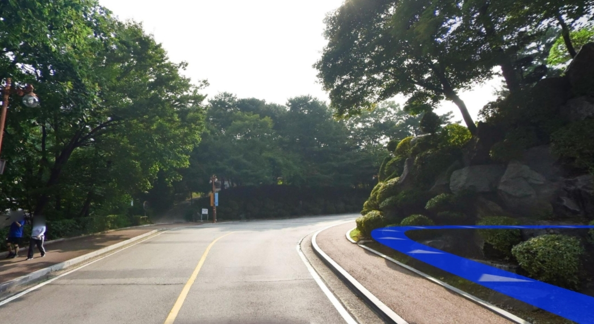
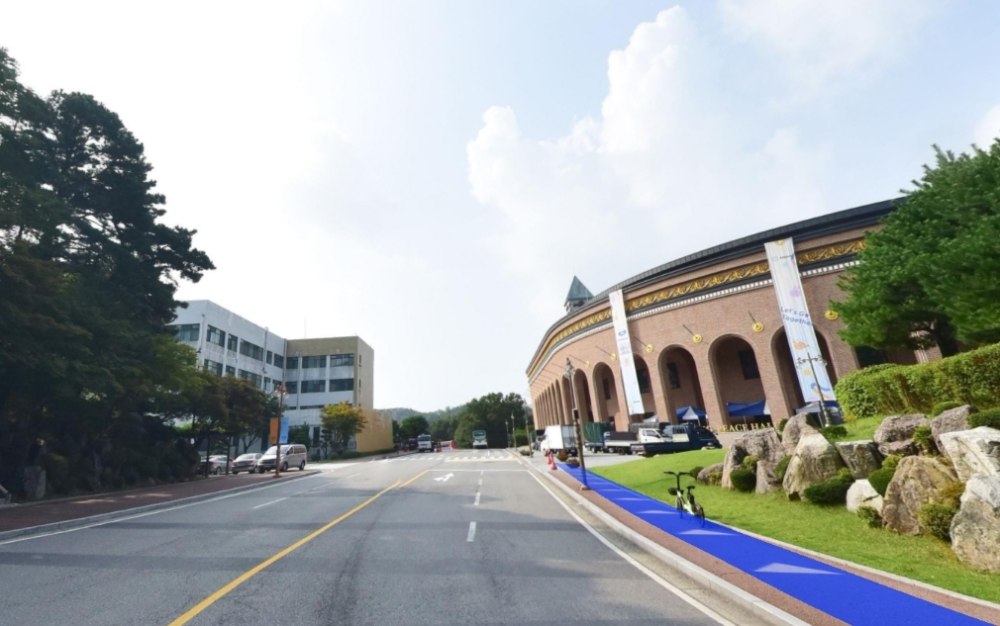
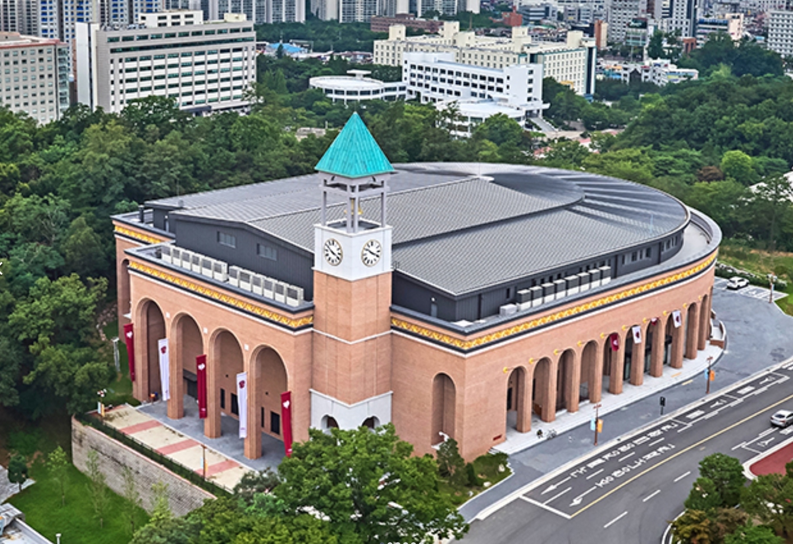
2층 관중석은 음식물과 음료 반입이 금지되며 물만 가능합니다. 1층은 관계자 외 출입이 제한됩니다. 관중석에서는 스마트폰을 제외한 사진 기기 사용이 불가하고, 경기 중 촬영 시 플래시가 켜지지 않도록 확인해주세요.